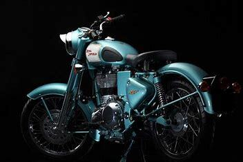

The Royal Enfield Bullet is a family of bikes in the Indian two-wheeler market manufactured by Royal Enfield. Royal Enfield has 1 Royal Enfield Bullet models under its flagship. The entry-level offering in the Royal Enfield Bullet family is the Royal Enfield Bullet 350 which retails for Rs 1.55 - 1.63 Lakh. The most expensive Royal Enfield Bullet on sale is the Royal Enfield Bullet 350 priced at Rs 1.55 - 1.63 Lakh. Find Price list, Colors, Mileage, Expert Review, Upcoming Royal Enfield bikes, specifications & features at BikeDekho.com.
oyal Enfield Bullet 350 is a cruiser bike available at a starting price of Rs. 1,50,893 in India. It is available in 3 variants and 6 colours with top variant price starting from Rs. 1,66,044. The Royal Enfield Bullet 350 is powered by 346cc BS6 engine which develops a power of 19.1 bhp and a torque of 28 Nm. With front disc and rear drum brakes, Royal Enfield Bullet 350 comes up with anti-locking braking system. This Bullet 350 bike weighs 191 kg and has a fuel tank capacity of 13.5 liters. The Bullet 350 is Royal Enfield’s oldest and entry-level offering that is available in three different variants. The standard model features the original old-school Royal Enfield badging with kick starter. Meanwhile, the X models are available with kick starter and electric starter both along with other cosmetic changes over the standard variant which make them look slightly more modern. The X trims of the Bullet 350 feature a blacked-out theme with only the fuel tank being the coloured component. The new variants sport blacked-out fenders, rims, engine, turn indicators, battery cover and side panels. Over the years, the iconic Bullet has evolved but still stayed true to its essence of being an old-school cruiser. The Bullet 350 features retro dials with an analogue speedometer, ammeter, and a key slot on the console. It is powered by an air-cooled 346cc, single-cylinder, fuel-injected mill churning out 19.1bhp of power at 5,250rpm and 28Nm of torque at 4,000rpm. This motor comes mated to a five-speed gearbox. The Bullet maintains its retro theme in terms of hardware with a single downtube chassis, spoke wheels, conventional front forks and dual shock absorbers at the rear. For braking, it gets a disc brake only at the front with ABS while the rear does away with a drum brake. The standard variant of the Bullet 350 comes in green and black colour options. As for the X variant, the KS model gets silver and black colour options while the ES is available in red, blue and black paint schemes.
.jpg)